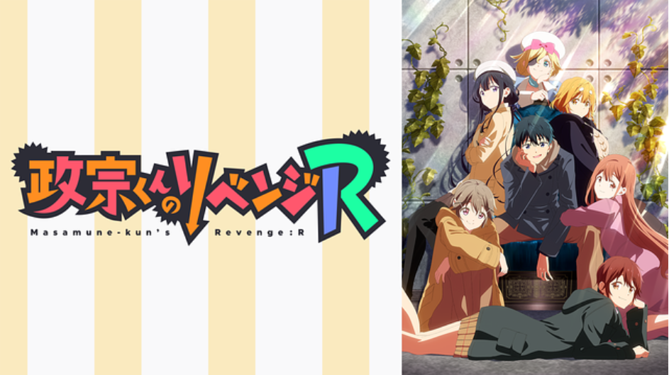

ここでは、主が今期のアニメについての感想や考察を投稿します。更新頻度は1話、3話、その後物語の進行ごとです。
毎期ごとに、1つ作品をピックアップしその作品については1話ごとに感想、考察を更新していきます。
また、全作は紹介できないため主の方である程度絞らせていただきます。
無職転生Ⅱ ～異世界行ったら本気だす～
第3話見終わりました。
前話の戦闘シーンと違い今回は日常系の話でした。ルーデウスとサラのデートシーンから夜の行い、そこからルーデウスの心情の変化へと繋がる。
しかし、せっかく仲良くなったサラともとあることがきっかけに決裂し今まで不仲だった冒険者と新たな旅へ続いていく。
日常的回でしたが物語的にはかなり重要な回だったと思います。

政宗くんのリベンジ R
第3話見終わりました。
政宗と愛姫の大喧嘩で幕を下ろした修学旅行から帰国し結局2人の関係は修復されないままで政宗はなんとか愛姫と仲直りをしようと
するが思い浮かばない。そんな時、フランスで出会ったミュリエルの兄から政宗と愛姫をモデルにミュリエルが描いた漫画を手渡され政宗は
8年前の出来事についてとある可能性にたどり着いた。原作を読んでいない私ですが物語の方向性にすごく驚きを感じました。
本来ならあまり広げるべきではない話題をあえて深掘りしていくところは今後の物語に着たいですね。
スパイ教室
2期の1話目(13話)見終わりました。
1期は私も声優陣の豪華さから注目していた作品でしたが、物語としては前半で終わってしまい後半は登場人物の紹介のような感じで
終わってしまったためあまり味気ない感じでした。
しかし、今期の13話目を視聴し1期のようなことはなくかなり物語性のある作品だと思います。個人的に今後の展開に注目です。
七つの魔剣が支配する
第3話見終わりました。
今回の話は物語として大きな進歩があった回でした。2話で一度決裂してしまったオリバーとナナオですが、今回のナナオの秘密がわかり
それに対しオリバーも納得し2人の仲はどうにか回復。
ここまで激しい戦闘シーンがあまり無くどちらかといえば魔法学校の日常的な感じで物語
が進んでいますが…個人的には今後の展開がまだ読めないので注目していきたいですね。
ライアー・ライアー
第3話見終わりました。
第1話の時はあまりいい感じではなかったので今期注目している作品だったのですが1話切りしている方にはあまりいいイメージがなかったかも…
ですが、3話では1話でわかった彩園寺更紗の嘘に加え別の嘘がわかるという場面で物語としては大きな進歩があったと思います。
また、イカサマの弱点がわかる回でもあったため今回の3話はかなりボリューミーな回だったと言えるでしょう。